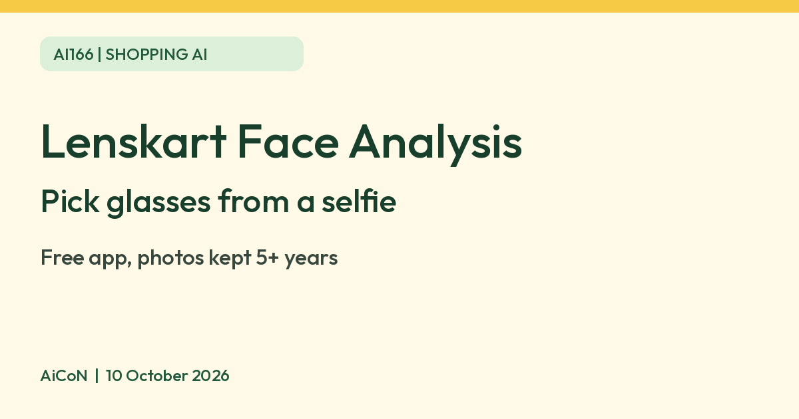

Lenskart Face Analysis: pick glasses from a selfie, and what happens to your photo
Lenskart Face Analysis suggests glasses and a frame size from a selfie. The app is free to download. Its policy lists five years from last website use, continued service or required law for photo/facial-data retention. The 3D Try On clause says those photos and facial scans are not shared with third parties; that is not a promise covering all app data.

What it is
Lenskart is an Indian eyewear shop with an app. Its Google Play listing describes Lenskart Face Analysis as an AI powered tool that helps you pick glasses for your face shape from home. You take a selfie, and the app gives a suggested frame size and recommends glasses that Lenskart says will suit you. The same listing describes 3D Try On, where you upload a photo or use your camera and try glasses on virtually.
Is it free
The app is free to download. The App Store India listing shows Lenskart as Free. The listings we read do not mention a fee for Face Analysis or 3D Try On, but Lenskart is a shop, so the tool is there to help you buy glasses. Free download is not proof that every feature, membership, eye-test or service is free. We did not complete an account flow or check a final feature paywall. Check any offer before accepting; eyewear purchases and optional memberships are separate.
Is it available in India
Yes. Lenskart is an Indian company, and the app has India listings on both Google Play and the App Store.
What happens to your selfie
Lenskart's privacy policy says that when you use 3D Try On and consent, it may collect a photo, facial scan or image of you. It says it does not share those photos, scans or facial data with third parties. It also says it keeps them for 5 years from your last use, or as long as it continues to provide services to you, or as required by law. This is not a fixed five-year deletion guarantee. The stated uses include measuring pupil distance/face width, mapping facial features, recommending frames and improving the service. The wider policy allows other personal-data sharing with affiliates/service providers, legal disclosures and processing outside India. Do not read the face-photo clause as a blanket no-sharing claim for your whole account. Read the policy before uploading.
Can you ask for deletion?
The policy lists rights to request erasure and withdraw consent, subject to legal exceptions, through dataprotectionofficer@lenskart.com. Turning off camera permission is not proof that an uploaded photo was deleted. Ask specifically about your face photos, facial measurements and account data. Do not upload someone else's face without their agreement; the policy requires parent/guardian involvement and verifiable consent for under-18 users.
How to try it
- Install the Lenskart app. The current India iOS listing requires iOS 15 or later; we did not verify every Android model.
- Open Face Analysis or 3D Try On and read the consent prompt before allowing camera/photo access. Compare its terms with the policy above.
- Look straight at the camera in good light, then compare the suggested frames.
Limits to know
- This is a style and size guide, not an eye test. It does not replace an eye check or a prescription.
- Lenskart itself says that low light or not looking straight at the camera can make face width readings inaccurate.
- Recommendations are for Lenskart products only. Confirm physical fit, temple length, bridge comfort and your correct prescription before ordering; a selfie cannot guarantee them.
- The engineering blog describes a frame-size prediction and face-recognition system, but it is not a current accuracy audit or proof of how every app version handles data.
- We did not test it ourselves.
Frequently asked questions
Does Lenskart keep my selfie?
The retention clause says five years from last website use, continued service or required law. Its 3D Try On clause says those photos/scans and facial data are not shared with third parties, while the wider policy permits other data sharing. Do not assume automatic deletion at five years.
Sources: Lenskart on Google Play, App Store India, Privacy policy, Lenskart blog on frame size. Checked 10 October 2026.